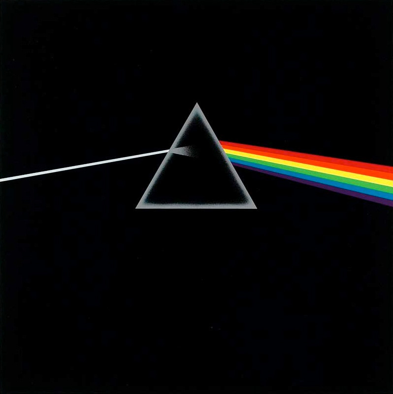
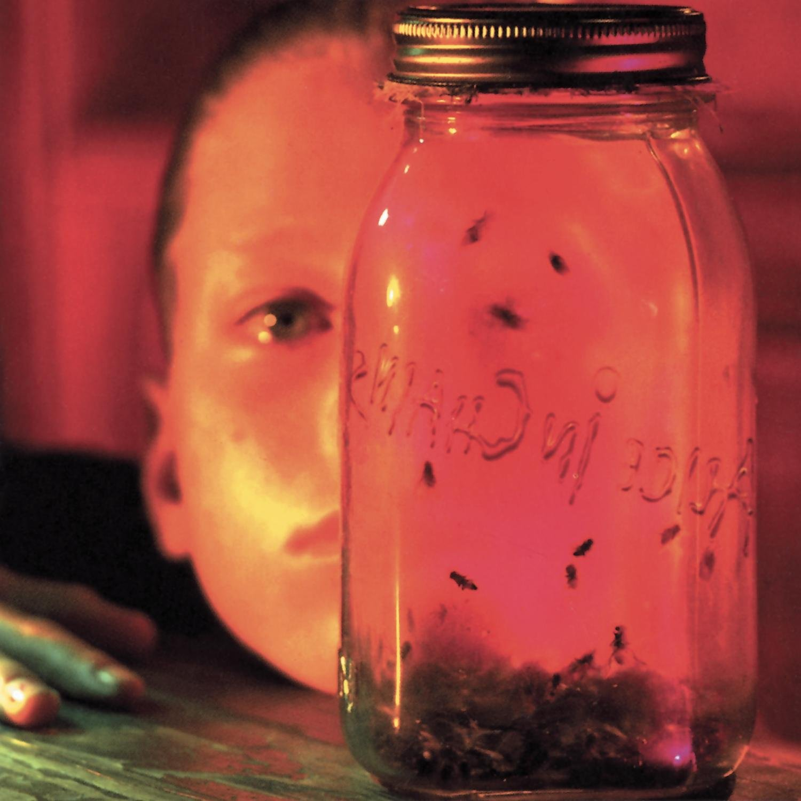
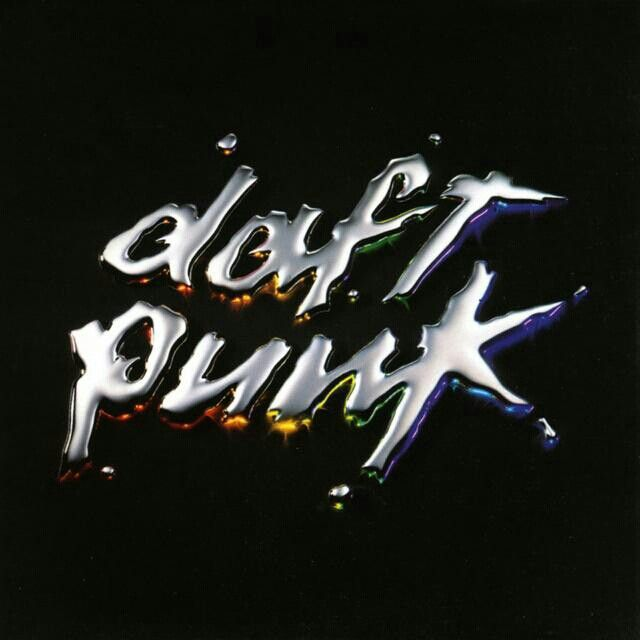

01 Dark Side of the Moon
Pink Floyd / 1973

Timeless. Transcendent. Beautifully Human. One of the greatest albums ever recorded and a masterpiece of progressive / psychedelic rock.
A listening archive, kept by Alex W.
A growing pile of favorite albums, and why I think they're so awesome. -Alex W.
THE SHORTLIST
Three albums I keep coming back to. In no particular order.
Pink Floyd / 1973

Timeless. Transcendent. Beautifully Human. One of the greatest albums ever recorded and a masterpiece of progressive / psychedelic rock.
Alice in Chains / 1994

A raw, emotional album that deviates from their usual sound.
Daft Punk / 2007

A groundbreaking album that revolutionized electronic music.
FRESH IN THE CRATE
Mac DeMarco / 2012
A introspective and melancholic album that captures the essence of youthful reflection.
Daft Punk / 2013
A poetic statement about clinging to humanity in a world that continues to grow more digital.